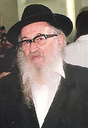

Rabbi Eliyahu Finkel A”H

During the war, he was sent with a group of bachurim to Siberia where he stayed in a prisoner of war camp. Upon his release he went to Kazakhstan where he met Lubavitcher Chassidim who were greatly mekarev him and learned Chassidus with him. They introduced him to Devora Stern, daughter of a famous family of Chassidim from Gomel (Homel) and Bobruisk. The wedding took place in 1945 after which the couple returned to Gomel where they lived for a number of years.
When Chassidim left Russia for Poland, he also left with his wife. They went to Lodz where, in the destroyed ghetto, R’ Eliyahu found the cellar that served as the beis midrash for the Gerrer Chassidim. In his love for Torah, he filled two suitcases with s’farim and they became his library which exists until today.
From Poland they went to the DP camp in Poking, Germany and then to France where they stayed together with a group of Chassidim who planned on moving to Eretz Yisroel, to Kfar Chabad. In the end, upon the Rebbe Rayatz’s instruction, they moved to Haifa.
***
In Eretz Yisroel, R’ Eliyahu was able to express his love for Torah. He was a maggid shiur in Tiferes Yisroel in Haifa for a number of years, and when Tomchei T’mimim Lubavitch was founded in Haifa in 5715 he became a maggid shiur there. He also began working as a shochet in Haifa and occasionally traveled to shecht abroad.
At that time, the Chabad community in Haifa numbered only a few families which included R’ Gershon Chein, R’ Menachem Mendel Kuperstock, R’ Yechiel Michel Dubroskin, the mashpia R’ Reuven Dunin and R’ Shlomo Kupchik. R’ Eliyahu helped support the shul which, at first, was in the home of R’ Dubroskin. He was the baal koreh and the baal tokeia. His pleasant yet thunderous voice was much appreciated by the members of the growing community.
R’ Eliyahu was involved with the religious Jews of Haifa and was one of the founders of Chevras HaMasmidim in the Gerrer shul. Even in his final years, he was one of the main supporters of the kollel for seniors that was in the Belzer shul.
For many years he would travel twice a year to shecht abroad, usually in South America. Each trip took months. On his way back home after shechting at the end of Elul, he would spend Tishrei with the Rebbe. He did this for many years. On his first trip to the Rebbe he had yechidus and received specific guidelines regarding personal matters.
One year, he could be seen walking down the street in Crown Heights while holding a large piece of fabric. When he was asked what it was, he said, “It’s for my wife. This gift is my visa for the next trip.”
***
R’ Eliyahu was an outstanding baal tz’daka. When he returned from his trips abroad he would look for boxes of meat with his seal on it and would buy a number of these crates and distribute them among Lubavitcher families.
For many years he ran a gemach from which he lent large sums of money interest-free. He helped families buy homes, marry off their children and establish Chabad houses. He often dismissed payment whether partially or entirely. He would say: It says in T’hillim, “a wicked man borrows and does not repay.” When he borrowed was he wicked? He is wicked when he does not repay! Rather, when you borrow you need to know how you are going to repay the loan. If you borrow without knowing how you will repay the money, that is being a wicked man who borrows, since you cannot repay the loan.
R’ Eliyahu constantly emphasized the importance of work. He himself went to the slaughterhouse every day early in the morning. By 8:00 he was already on his way to the next slaughterhouse and he worked even in his 87th year. When he was already suffering from Parkinson’s he still went abroad as a mashgiach.
***
In his final years he suffered from Parkinson’s and it was difficult for him to leave the house. He also suffered from problems with his eyes, but since he was proficient in Shas by heart, he continued to learn.
On Rosh Chodesh Shvat he asked when Yud Shvat falls out and was told the following Monday. On 2 Shvat, when his temperature went up, he asked, “Is tomorrow Yud Shvat?”
He passed away on Monday, Yud Shvat, a few minutes before sunset. He is survived by his wife, children, and grandchildren, some of whom are shluchim, and great-grandchildren.
S.Z. Levin. "Rabbi Eliyahu Finkel A”H." Beis Moshiach, no. 871 (February 27, 2013).